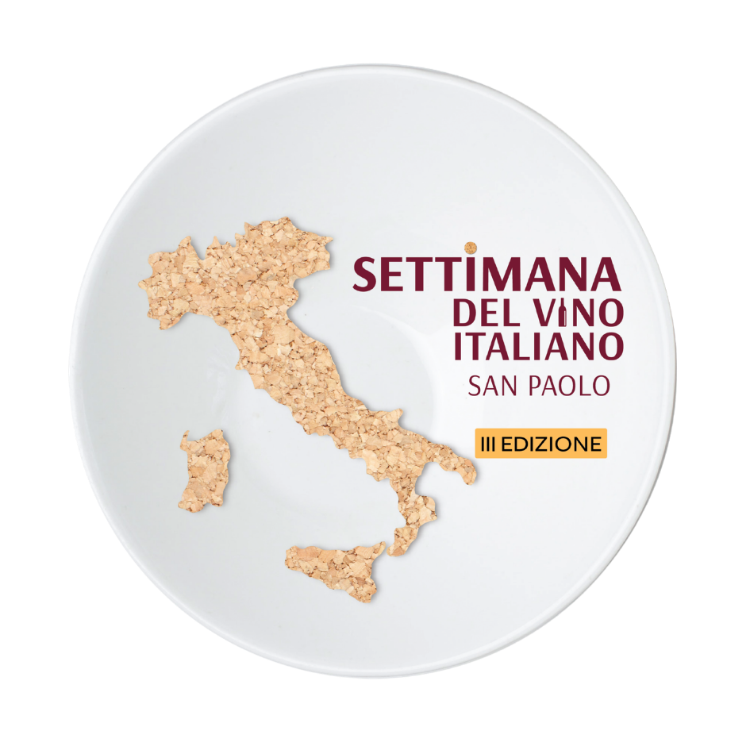

Realizadores


Apoio
3ª Edição · São Paulo,
Brasil
Uma jornada pelas 20 regiões da Itália —
taça a taça, mesa a mesa,
em renomados restaurantes italianos de São Paulo.
25 — 31 de Maio de 2026

O Evento
A Settimana del Vino Italiano, realizada entre 25 e 31 de maio, é um convite para descobrir a extraordinária diversidade vinícola da Itália — um território com o maior número de castas viníferas do planeta, líder mundial em certificações DOP e IGP, e produtor de rótulos que vão dos grandes clássicos mundiais às joias regionais ainda desconhecidas do grande público.
Durante sete dias, 20 prestigiados restaurantes italianos de São Paulo vestem as cores de suas regiões adotadas e levam para a mesa vinhos selecionados, em taça e em garrafa, que certamente farão ótima companhia às receitas do Bel Paese desses endereços.
A 3ª edição da Settimana del Vino é também o prelúdio da 15ª Settimana della Cucina Regionale Italiana, o maior evento de gastronomia italiana do Brasil, que reunirá os mesmos restaurantes em outubro para celebrar as cozinhas regionais da Itália.
Curiosidades
A Itália concentra o maior número de castas autóctones do mundo, com mais de 500 variedades oficialmente reconhecidas. Nenhum outro país se aproxima dessa biodiversidade vinícola.
O nome "Enotria" — Terra do Vinho — foi dado à Península Itálica pelos gregos na Antiguidade. Os gregos já reconheciam ali um terroir de vocação vinícola incomparável.
A Itália é o maior exportador de vinho do mundo em volume, e consistentemente um dos três maiores em valor, disputando o topo com França e Espanha.
Em 1980, o Brunello di Montalcino e o Vino Nobile di Montepulciano tornaram-se os primeiros vinhos italianos a receber o selo DOCG. Ambos são toscanos, feitos com Sangiovese, mas com personalidades distintas: o Brunello, estruturado e de longa guarda; o Nobile, elegante e de vocação gastronômica.
A região do Piemonte é comparada à Borgonha francesa: pequena, nobre e responsável por alguns dos vinhos mais longevos do mundo — Barolo e Barbaresco chegam a durar 50 anos.
A Sicilia é a maior região vitivinícola da Itália. Com um rico conjunto de castas autóctones, a ilha desponta como um dos territórios mais excitantes para vinhos de terroir intenso e personalidade mediterrânea.
O Prosecco, o espumante mais consumido no mundo, é produzido exclusivamente no Veneto e Friuli. A região de Conegliano-Valdobbiadene é Patrimônio da Humanidade pela UNESCO.
A Aglianico, uva do sul da Itália, é chamada de "Barolo do Sul". Seus vinhos — como o Taurasi, da Campania, e o Aglianico del Vulture, da Basilicata — são de uma profundidade surpreendente.
O Sagrantino di Montefalco, da Umbria, é considerado o vinho com maior teor de taninos naturais da Itália. Cultivado apenas em torno de Montefalco, é um raro tesouro do miolo da bota italiana.
A Sardegna guarda uma das uvas mais fascinantes da Itália: a Cannonau, geneticamente ligada à Grenache espanhola, mas com raízes tão profundas na ilha que muitos a consideram nativa. Seus vinhos estão entre os mais longevos da bacia do Mediterrâneo.
Participantes 2026
Vinte prestigiados restaurantes italianos de São Paulo, cada um embaixador de uma região da Itália — seus vinhos, sua alma.
Onde Encontrar
Todos os 20 endereços participantes em São Paulo
Guia do Evento
Cada restaurante representa uma região italiana com vinhos selecionados e sugestões em taça e garrafa. Conheça rótulos e preços abaixo.
Abruzzo
Bráz Trattoria (Pinheiros)Basilicata
Maremonti (Campo Belo)Calabria
Vinheria PercussiCampania
Santo ColombaEmilia-Romagna
VinariumFriuli-Venezia Giulia
BenvenutoLazio
Tre BicchieriLiguria
SensiLombardia
MarenaMarche
Ca'd'OroMolise
Casa Santo AntônioPiemonte
Terraço ItáliaPuglia
Supra di Mauro MaiaSardegna
Ristorantino CaffèSicilia
Piselli JardinsToscana
LidoTrentino-Alto Adige
ZenaUmbria
Nino CucinaValle d'Aosta
Zucco (Jardins)Veneto
Gero ItaimRealizadores
Apoio